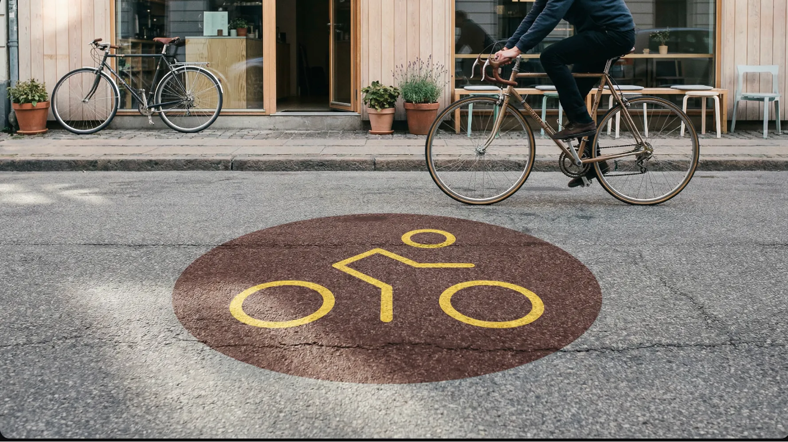
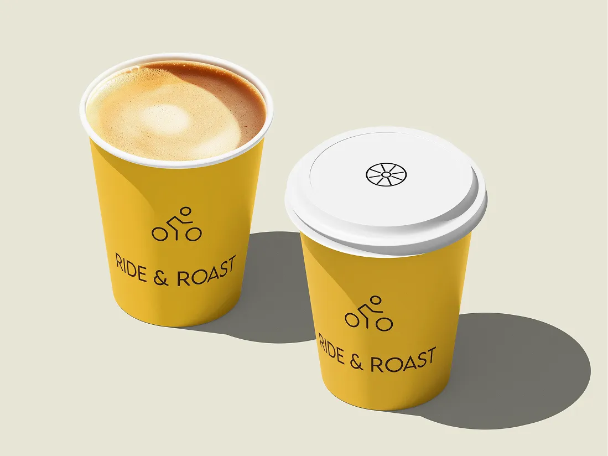
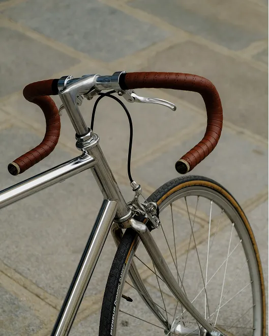
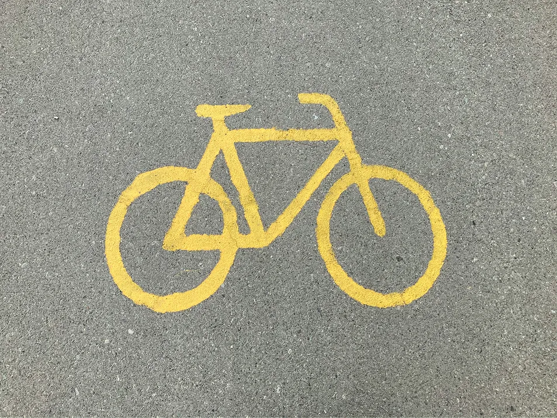
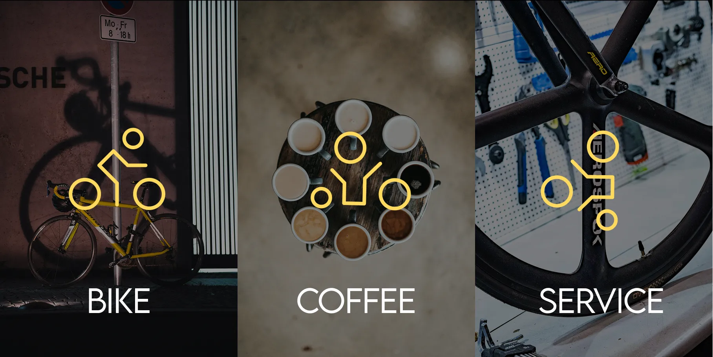
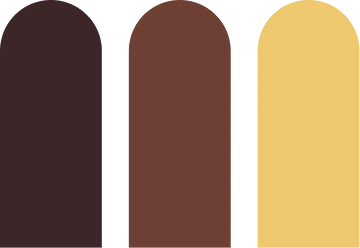

Ride & Roast

Where coffee culture meets urban mobility.
Ride & Roast is a brand concept for a modern café and bicycle workshop, where coffee culture meets urban mobility.
The identity is built to reflect craftsmanship, precision, and community — creating a cohesive experience across both physical and digital touchpoints.

Movement, community, and everyday pauses
The moodboard for Ride & Roast is built around a sense of movement, community, and everyday pauses. It explores the contrast between activity and calm — where cycling represents energy and freedom, while coffee symbolizes recovery and social connection.
The color palette and visual style lean toward warm, earthy tones combined with clean, modern elements to balance the urban and the natural. Overall, the moodboard aims to convey a lifestyle rather than just a service.





From concept to identity
The concept for Ride & Roast was developed through an iterative process, starting with identifying user needs around movement, social interaction, and meaningful breaks in everyday life. Through research and early ideation, I explored how cycling and coffee culture could be combined into a cohesive experience.
Sketching, moodboarding, and testing different directions helped shape the concept, focusing on simplicity, accessibility, and a strong sense of community. The final idea reflects a balance between functionality and emotion, aiming to create a service that feels both practical and engaging.

Logo explorations
Colour systemThe final brand system
Brand identity for a modern café and bicycle workshop where coffee culture meets urban mobility. The visual system is rooted in craftsmanship and community — a warm palette of Deep Roast, Leather, and Golden Oat runs through every touchpoint, from menus (food, service, and drinks) to branded tote bags.
The icon distills the cycling experience into a minimal, geometric mark that feels equally at home on a coffee cup and a workshop sign. Every element is designed to bridge two worlds — the ritual of a good brew and the freedom of the ride.